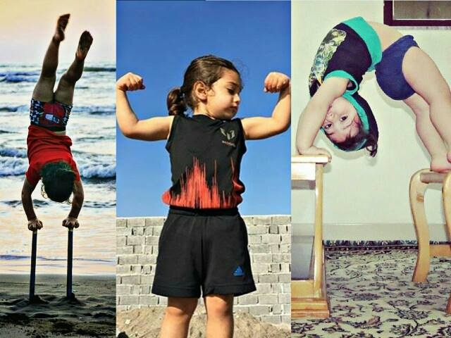
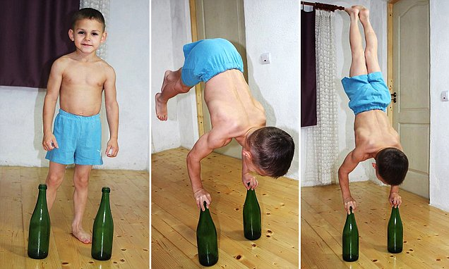
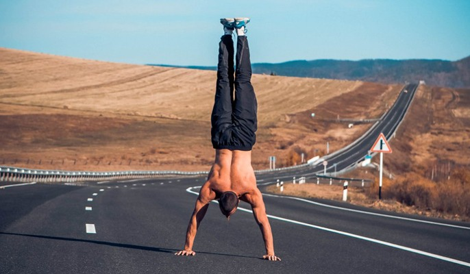
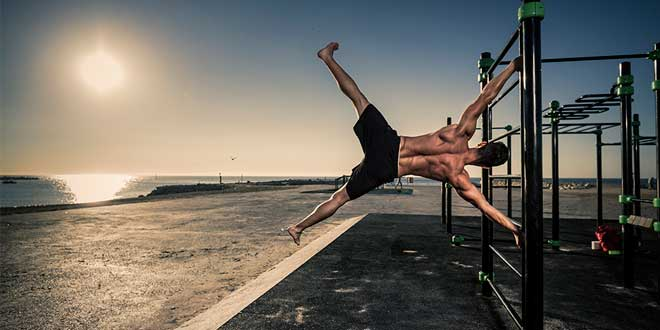

Como todo en esta vida el sufrimiento trae algo bueno.
Aqui tienes la recopiltion de lo que seria uno de los pequeños trucos que que el humano es capas de hacer sin problema
EL PROGRESO NO TIENE FINAL
Gente de todo tipo de edad si se lo proponen en la cabeza pueden llegar a la meta.

Desde pequeños algunos
Otros no tan jovenes

